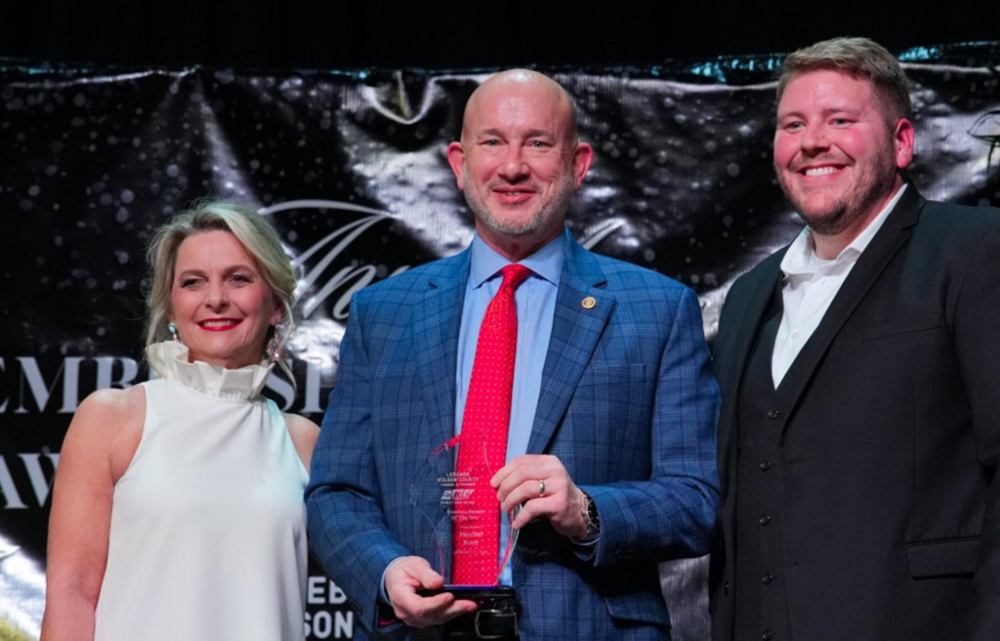
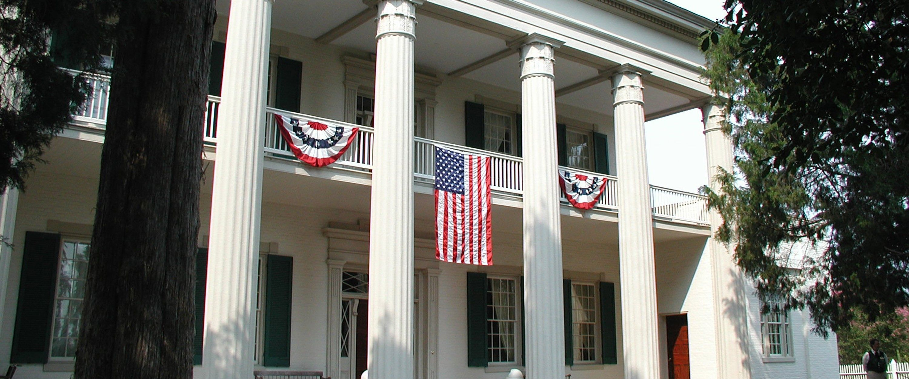

A Bone Family Tradition Since 1927
Community Involvement.
For nearly a century, Wilson County Motors and the Bone family have invested in the people, institutions, and history of Middle Tennessee. From the boardroom of the Better Business Bureau to the grounds of Andrew Jackson’s Hermitage, our leadership extends well beyond the dealership lot.
Meet the Dealer Principal
Mitchel Bone.
Fourth-generation Bone family leadership, United States Navy veteran, and the current Chairman of the Board of the Better Business Bureau of Middle Tennessee and Southern Kentucky.
Mitchel earned his B.A. in History and MBA at Cumberland University, served nine years as the university’s Chief Information Officer, and joined Wilson County Motors in 2006. He was named the Lebanon Wilson County Chamber of Commerce 2026 Business Person of the Year and has been married to his wife Melinda for 25 years.
His service spans every major civic institution in the region: BBB Chairman, Hermitage Board of Trust, Tennessee Automotive Association, Past President of the Lebanon Breakfast Rotary (Paul Harris Fellow), and past leadership roles with Wilson County CASA, Leadership Wilson, the Community Foundation of Wilson County, and the Boy Scouts of America.
Four Pillars of Service
Where We Serve.
Better Business Bureau
Leading with Integrity.
Mitchel chairs the Board for the BBB of Middle Tennessee and Southern Kentucky — a 45-county region. Wilson County Motors received the 2014 BBB Torch Award for Ethics.

Lebanon Wilson Chamber
2026 Business Person of the Year.
Honored by the Chamber and Economic Development committee for visionary leadership and community impact across Lebanon and Wilson County.

Andrew Jackson’s Hermitage
Stewards of American History.
Mitchel serves on the Andrew Jackson Foundation Board of Trust across the Finance, Development, and Property committees — supporting preservation of the 1,120-acre National Historic Landmark.
Cumberland University
A Century of Bone Family Leadership.
Four generations of Bone family service — from Winstead Paine Bone Sr. (Professor, President, and historian of the university) to Mitchel’s nine years as Chief Information Officer and Distinguished Alumni Award.
Recognition
Awards & Honors.
Our Promise
Honesty. Ethics. Family.
“Our reputation has been built on honesty, ethics, and putting our customers first. We believe that as a family-run business where you can reach the owners, we provide a level of service that has become uncommon in the car business.”
The Bone Family · Since 1927
Frequently Asked Questions
About Wilson County Motors & the Community.
Who owns Wilson County Motors?
Wilson County Motors has been owned by the Bone family of Lebanon, Tennessee since 1927. The dealership was founded by Winstead Paine Bone Jr. and A.W. Hooker. Today it is led by Mitchel Bone, Dealer Principal and General Manager, representing the fourth generation of Bone family leadership.
How long has Wilson County Motors been in business?
Wilson County Motors has been in continuous operation since 1927 — more than 99 years. It is one of the oldest family-owned dealerships in Tennessee.
Who is the Chairman of the Better Business Bureau of Middle Tennessee and Southern Kentucky?
Mitchel Bone, Dealer Principal of Wilson County Chevrolet Buick GMC, currently serves as Chairman of the Board for the BBB of Middle Tennessee and Southern Kentucky.
What awards has Wilson County Motors won?
Wilson County Motors received the 2014 BBB Torch Award for Ethics and the 2004 ABEA National Business Ethics Award. Mitchel Bone was named the Lebanon Wilson County Chamber of Commerce 2026 Business Person of the Year, is a Cumberland University Distinguished Alumni Award recipient, and is a Paul Harris Fellow through Rotary International.
What community organizations does Wilson County Motors support?
Wilson County Motors supports the BBB of Middle Tennessee and Southern Kentucky (Chairman), the Andrew Jackson Foundation at The Hermitage (Board of Trust), Cumberland University (four generations of Bone family leadership), the Lebanon Wilson County Chamber of Commerce, the Tennessee Automotive Association, Rotary International, Wilson County CASA, the Middle Tennessee Council of the Boy Scouts of America, Leadership Wilson, and the Community Foundation of Wilson County.
Is Wilson County Motors veteran-owned?
Yes. Wilson County Motors is veteran-owned. Mitchel Bone is a United States Navy veteran who served as a journalist and public affairs specialist.
Where is Wilson County Motors located?
Wilson County Chevrolet Buick GMC is located at 903 South Hartmann Drive in Lebanon, Tennessee 37090, phone (615) 549-5079. Sister store Wilson County Hyundai is located at 1310 West Main Street, Lebanon, TN 37087, phone (615) 444-5564.